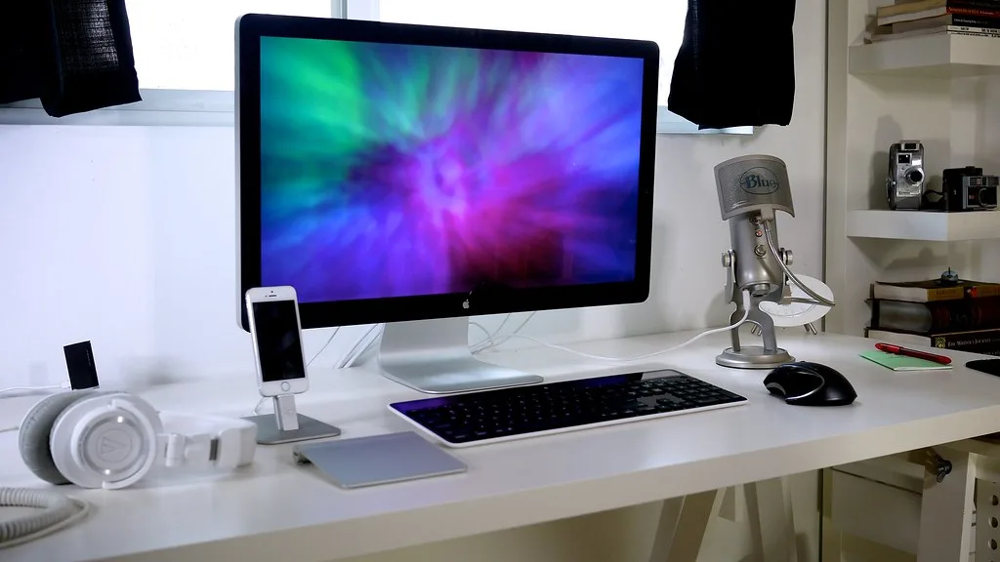

애플이 2나노미터 공정으로 만든 신형 칩 'M6'을 탑재한 맥북프로와 아이맥을 새로 내놨다. 애플은 지난 27일(현지시각) 이 신제품들을 공개하면서, 인공지능(AI) 연산과 그래픽 처리 능력을 끌어올린 것이 이번 세대의 가장 큰 특징이라고 밝혔다. 14인치 맥북프로를 시작으로 아이맥, 아이패드 미니까지 동시에 신제품 라인업을 갱신한 것은 애플로서도 이례적으로 빠른 호흡의 제품 교체다.
성능 면에서 가장 눈에 띄는 변화는 전작 M5와 비교한 수치다. 애플은 M6 칩이 M5 대비 AI 성능을 25%, 그래픽 성능을 30% 끌어올렸다고 설명했다. 2년 만에 새로워진 24인치 아이맥의 경우 변화의 폭이 한층 크다. 직전 모델과 비교해 온디바이스 AI 처리 속도가 최대 5배, 그래픽 성능은 최대 2배까지 향상됐다는 것이 애플 측 설명이다. 기기에서 직접 AI 연산을 처리하는 이른바 '온디바이스 AI' 흐름이 애플 제품 전반에 더 깊숙이 자리잡고 있음을 보여주는 대목이다.
사용성 측면의 개선도 함께 이뤄졌다. 신형 14인치 맥북프로는 배터리 사용 시간이 최대 24시간으로 늘어나, 하루 종일 충전 없이 쓸 수 있는 노트북이라는 점을 앞세우고 있다. 특히 애플은 맥북 라인업 가운데 처음으로 터치스크린을 지원하는 유기발광다이오드(OLED) 디스플레이를 적용한 모델도 선보일 예정이라고 예고했다. 수년째 터치스크린 도입 여부를 두고 신중한 태도를 보여온 애플이 실제 제품으로 이를 구현한다는 점에서 업계의 관심이 쏠린다.
가격 정책을 보면 애플은 성능을 끌어올리면서도 가격은 전작 수준으로 유지하는 전략을 택했다. 신형 14인치 맥북프로는 329만 원부터, 새 아이맥은 249만 원부터 시작하는 가격으로 책정됐다. 2년 전 출시된 아이맥과 비교하면 같은 가격대에서 성능만 크게 끌어올린 셈이어서, 교체 수요를 자극하려는 의도가 담긴 가격 설계라는 평가가 나온다.

출시 일정도 함께 공개됐다. 맥북프로, 아이맥, 아이패드 미니 신제품은 29일 오전 2시 10분부터 예약 주문을 받기 시작했으며, 다음 달 6일부터 정식 판매에 들어간다. 세 제품을 같은 시점에 묶어 출시하는 방식은, 연말 소비 시즌을 앞두고 다양한 가격대와 용도의 제품을 한꺼번에 시장에 내놓아 수요를 극대화하려는 전략으로 풀이된다.
업계에서는 이번 M6 세대 공개가 애플의 AI 경쟁력 강화 행보와 맞물려 있다는 분석이 나온다. 경쟁 빅테크들이 클라우드 기반 AI 모델 경쟁에 주력하는 사이, 애플은 기기 자체의 연산 능력을 높여 사용자 데이터를 기기 안에서 처리하는 온디바이스 AI 전략을 꾸준히 밀고 있다. 클라우드로 데이터를 보내지 않고도 기기에서 바로 AI 기능을 실행할 수 있다는 점은 개인정보 보호를 중시하는 소비자층에게 특히 매력적인 요소로 꼽힌다.
신제품의 실제 판매 성적은 애플의 이런 전략에 대한 시장의 평가를 가늠하는 기준이 될 것으로 보인다. 특히 맥북 라인업 최초의 터치스크린 OLED 모델이 언제, 어떤 형태로 출시될지는 업계의 가장 큰 관심사로 남아 있다. 애플이 수년간 신중하게 검토해온 사안을 실제 제품으로 구현하는 만큼, 경쟁사들의 후속 대응에도 영향을 미칠 수 있는 변화로 받아들여지고 있다.